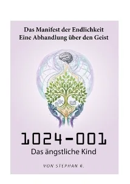

Band 11024-001
20
Das ängstliche Kind
2026–2027
1989, ein weißer Punkt auf einem alten Fernseher: Für die junge Jenny wird die Angst vor dem Ende zur Obsession. Jahrzehnte später schreibt sie gegen die Isolation an und entwirft eine Utopie.